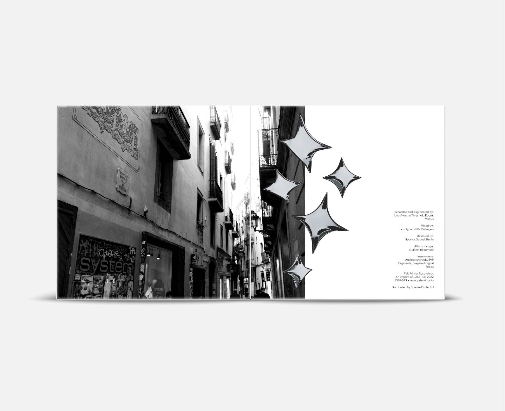
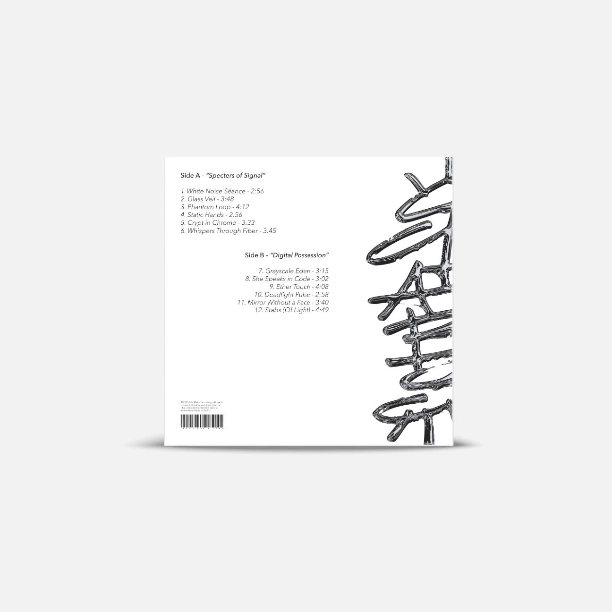
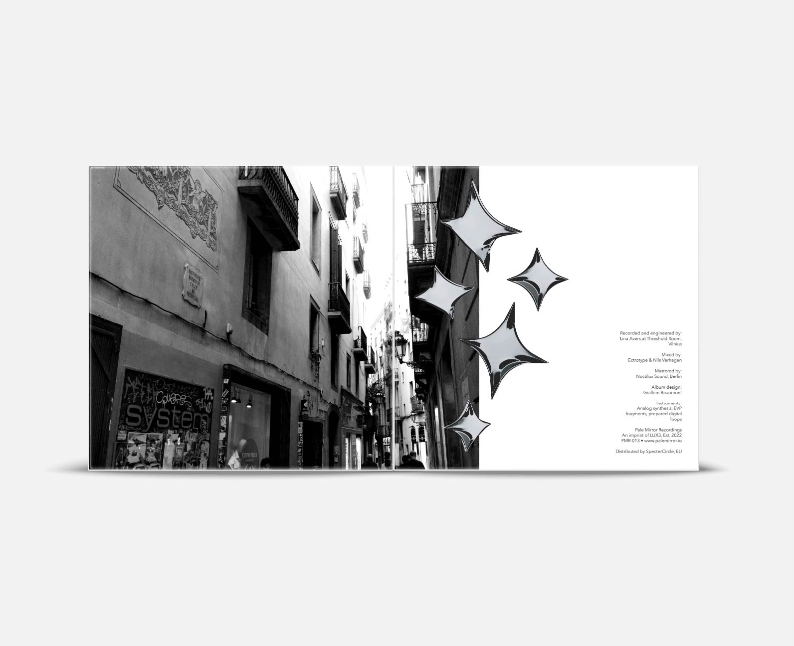
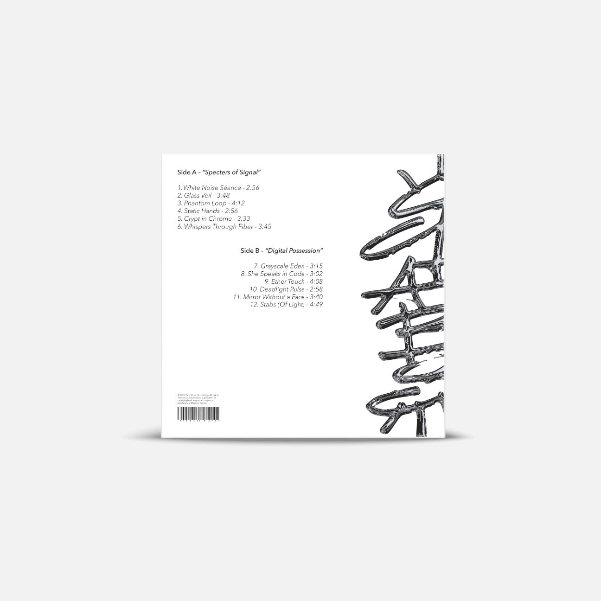

Proyecto autoexperimental de diseño editorial centrado en la creación de un vinilo musical ficticio, con una maquetación original que convierte el objeto en una pieza artística más allá de su función musical. La propuesta combina una estética sublime con fotografías originales, integradas como parte esencial de la narrativa visual, explorando el formato del vinilo como un soporte gráfico único y expresivo


 


